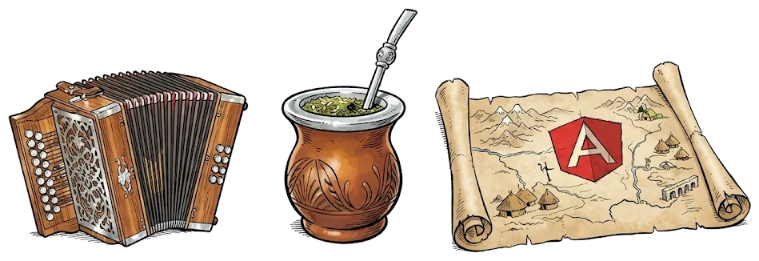
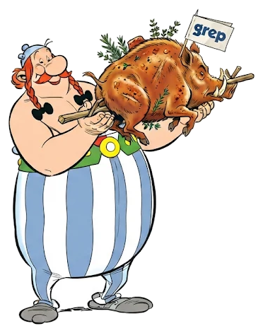
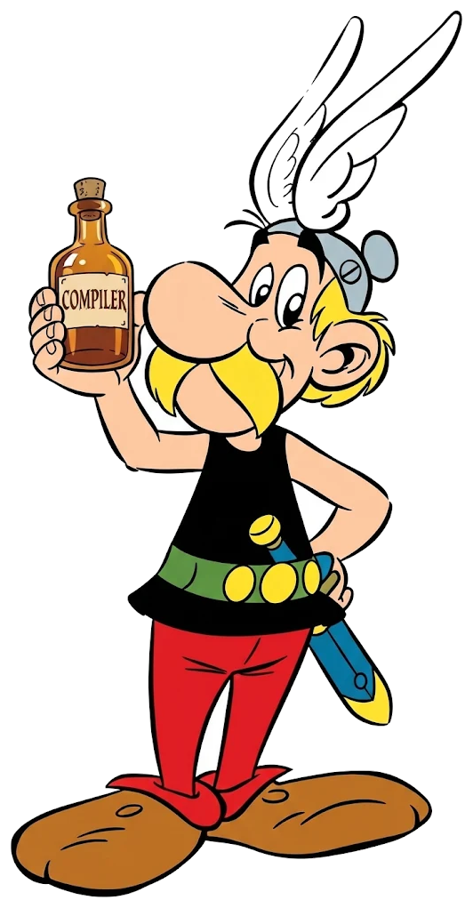

NG Poland 2026
Veni, Vidi, Compilavi
(do not ask your AI what it means 🙂)
Teaching AI agents to use the Angular compiler
Rafał Brzoska · Software Engineer


Quis loquitur? · who is talking
Rafał Brzoska
Commands legions of AI agents at Voucherify

Off duty
Fuel
The weapon
What we have · the year is 2026
One big Angular app. One mission.
Hundreds
of components
Thousands
of inputs
!
A breaking change
The mission · one shared component, one breaking change
The design system shipped app-pill v2.

Hungry Obelix
files + grep
eats a lot of tokens
disableTooltip
→
tooltip
the opposite meaning
variant
→
tone
new values
label
→
content
the text moves inside the tag
v1 <app-pill label="On" variant="success" [disableTooltip]="!on" />
v2 <app-pill tone="positive" [tooltip]="on">On</app-pill>
440
places to change
120
components
700
compiler errors

Smart Asterix
the same model
plus a magic potion
The search · the agents' own log, from a recorded run
Same task. Two ways to search.
We are looking for every <app-pill> and its old inputs: disableTooltip, variant, label
Obelix · grep
Asterix · the compiler
The search · the agents' own log, from a recorded run
Same task. Two ways to search.
We are looking for every <app-pill> and its old inputs: disableTooltip, variant, label
Obelix · grep
PROMPT Migrate every <app-pill> to v2 …
> Grep "app-pill|PillComponent"
Output too large (30.8KB)
> grep -rcE "<app-pill([ >/]|$)" src
420 ← there are 440
> grep -rhoE "<app-pill[^>]*>?" src | uniq -c
100 <app-pill label="…" variant="…" …/>
60 <app-pill ← tag split over lines
40 <app-pill … [disableTooltip]="count >
← cut at the ">"
> python3 mig.py ← his own regex program
9 commands · 10 trips to the model · 301 k tokens
Asterix · the compiler
The search · the agents' own log, from a recorded run
Same task. Two ways to search.
We are looking for every <app-pill> and its old inputs: disableTooltip, variant, label
Obelix · grep
PROMPT Migrate every <app-pill> to v2 …
> Grep "app-pill|PillComponent"
Output too large (30.8KB)
> grep -rcE "<app-pill([ >/]|$)" src
420 ← there are 440
> grep -rhoE "<app-pill[^>]*>?" src | uniq -c
100 <app-pill label="…" variant="…" …/>
60 <app-pill ← tag split over lines
40 <app-pill … [disableTooltip]="count >
← cut at the ">"
> python3 mig.py ← his own regex program
9 commands · 10 trips to the model · 301 k tokens
Asterix · the compiler
PROMPT the same + “and use ng-facts script based on Angular Compiler”
> ng-facts usages PillComponent
440 uses in 120 files (139 ms)
feature-1.component.html:3 <app-pill>
feature-1.component.html:4 <app-pill>
feature-1.component.html:5 <app-pill>
… +437 more
> ng-facts migrate spec.json --write
440 elements, 2680 edits in 170 files,
0 need a decision (163 ms)
3 commands · 4 trips to the model · 130 k tokens
The magic potion · brewed by our druids, the Angular core team
The potion: a few lines of code.
import { parseTemplate } from "@angular/compiler";
// node mini-facts.mjs app-pill disableTooltip
const [ tag, input ] = process.argv.slice(2);
for (const file of htmlFiles) {
const { nodes } = parseTemplate(read(file), file);
everyElement(nodes, element => {
if (element.name !== tag) return;
for (const binding of element.inputs) {
if (binding.name !== input) continue;
print(file, binding.sourceSpan);
}
});
}
1
The compiler reads
facts, not a regex guess
2
Only the tag and input you ask for
no wrong hits: 1 004 → 440
3
File and line, nothing more
the agent reads less and asks less
The compiler reads. The script answers. The agent decides.
Does it pay off? · the same mission, every run recorded
Same result. A smaller bill.
Obelix · files + grep
Asterix · with the potion
Strong model
Claude Sonnet · 8 runs each
$0.17–0.32
a run · right in 8 of 8
$0.06–0.09
a run · right in 8 of 8 · once $0.65
Small, cheap model
Claude Haiku · 3 runs each
1 of 3
runs right · $0.02–0.04 a run
3 of 3
runs right · about one cent a run
Your turn · the potion is already in your node_modules
Don't make your agent search.
Ask your compiler.
1
Copy 25 lines
tool/mini-facts.mjs
It works for any component and any input: they are just arguments.
2
Need another answer?
Ask your agent to add one more command to the script. Once.
3
Give it to your agent
One line in its instructions:
“Before you search, run the script.”
What you can use it for
Who uses this input? · What is dead code? · Which routes show this component? · Leaving AngularJS · NgRx → signals

The end · the banquet begins
Thank you!
These agents are crazy!
Rafał Brzoska · Voucherify
github.com/rbrzoska/ng-poland-2026